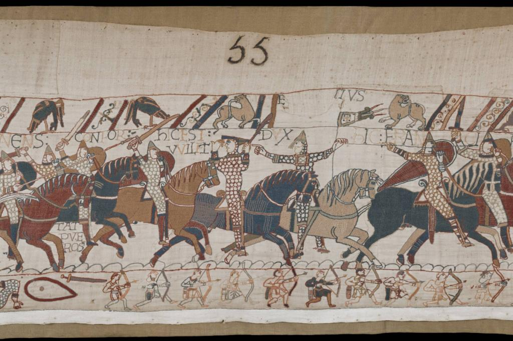

|
CC NUMISMATICS |
⊠ | ||||||||
| AD 1083 - England - Penny - William I, known as William the Conqueror: | |||||||||
| Period: | Middle Ages; Kingdom of England (927-1649); House of Normandy (1066-1135) | ||||||||
| Ruler: | William I, known as William the Conqueror (1066-1087) | ||||||||
| Type: | Regular issue | ||||||||
| Obverse: | |||||||||
|
Design: Bust of William I, facing, crowned with a flat band and arches, holding a cross-tipped and winged sceptre in the left hand, with a trefoil above the left shoulder Director: Lifwold (?-?) Engraver: - |
|||||||||
| Reverse: | |||||||||
|
Design: Short cross pattée, with each letter of PAXS (derived from "pax" the latin word for "peace") in order, in an annulet per quadrant, commencing in the 2nd quadrant Director: Lifwold (?-?) Engraver: - |
|||||||||
| Thoughts: | |||||||||
This NGC-certified coin is described incorrectly on the certification label as: LONDON LEOFWINE. The holder will be sent to NGC for correction. Relatively rare in this condition |
|||||||||
| Edge: | Plain | ||||||||
| Alignment: | Variable (↺, 06h) | Technique: | Hammered | ||||||
| Rarity: | C | Material: | Silver | ||||||
| Year: | 1083 (not dated) | Fineness: | 925 | ||||||
| Country: | England | Weight (g): | Measured: 1.37; Expected: 1.34 | ||||||
| Issuer: | England | Shape: | Round (Irregular) | ||||||
| Value: | 1 | Diameter (mm): | Expected: 20 | ||||||
| Unit: | Penny (924-1158) | Thickness (mm): | 0.6 | ||||||
| Mint: | Winchester | Mintage: | |||||||
| Mint mark: | ON PINC | Emission period: | 1083-1087 | ||||||
| Status: | Owned | Quality: | Circulating (demonetised) | ||||||
| Grade: | MS61 (NGC 8220880-004) | Variety: | Crown 3 | ||||||
| References: | S1#1257; North1#850 | ||||||||
| Varieties: | |||||||||
There are three varieties, with minor die-engraving variations in how the king's crown is styled: crown 1 (North1#848), crown 2 (North1#849) and crown 3 (North1#850). |
|||||||||
| Pedigree: | |||||||||
CC Collection, acquired at Stanley Gibbons Baldwin's Auction 133: Ancient and British Coins, Featuring The Imperator Collection of Greek and Roman Coins on 23 November 2026 as Lot 70 (see https://sgbaldwins.com/auctions/ancient-and-british-coins-featuring-the-imperator-collection-of-greek-and-roman-coins-auction-133-c26008/lot/70) Ex London Coins Ltd Auction 184 - Day 2 on 3 March 2024, Lot 1454, Starting price: GBP 140, Estimation: GBP 175-350, Price realised: Hammer price: GBP 600 + Buyer's premium (18.5%): GBP 111 = GBP 711 (see https://www.londoncoins.co.uk/?page=Pastresults&auc=184&searchlot=1454&searchtype=2) |
|||||||||
| Monetary system: | |||||||||
In late Anglo-Saxon and Norman times coins were struck in the King's name at a large number of mints distributed in centres of population, and in times of emergency in places of refuge, across England and Wales. During the 10th century the use of a mint signature was sporadic but from the Reform type of Edgar the mint name is almost invariably given, usually in conjunction with that of the moneyer responsible, e.g., EDGAR ON BERCLE. At the peak, 71 mints struck the quatrefoil type of Cnut (circa 995-1035; r. 1016-1035) and 65 the PAXS type of William I (the Conqueror; circa 1028-1087; r. 1066-1087) and they provide a valuable insight into the economic and social structures of the period. The output of the mints varied enormously and a dozen are exceptionally rare. Approximately 100,000 pennies survive, half of which emanate from the great centres of London, Canterbury, Lincoln, Winchester and York. At the other end of the scale a mint such as Rochester is known from about 500 coins, Derby from around 250, Guildford 100, Bedwyn 25, Horncastle 4, and Pershore 1. Many of these coins, particularly those from the great Scandinavian hoards, are in museum collections and are published in the Sylloge of Coins of the British Isles (SCBI) series.
There are too many type and mint combinations, over 1,500 Saxon and 1,000 Norman, such that values provided in all valuation catalogues are for the commonest Saxon and Norman type, generally in VF (XF45) condition. The threshold VF value for a Norman coin exceeds that for a Saxon coin accounting for the difference in starting level. Values for coins in lower grade would be less and there is a premium for the rarer types for each mint, but for many types, e.g., in the reigns of Harthacnut (circa 1018-1042; r. 1035-1042) or Henry I (circa 1068-1135; r. 1100-1135), the value of the type itself far exceeds that of many of the constituent mints and a scarce mint is only worth a modest premium over a common one. William I (the Conqueror) maintained the Anglo-Saxon mint system and the practice of conducting frequent periodic recoinages by change of coin type. However, the 12th century witnessed a gradual transition from regional to centralised minting. Nearly seventy towns had moneyers operating under William I, but only thirty mint towns took part in the recoinage initiated by the Cross-and-Crosslets ('Tealby') coinage in 1158. Cut halfpennies and cut farthings were made during this period, but are scarce for most types to the end of the reign Henry I; cut coins are more frequently encountered for subsequent types. An important monetary reform occurred towards the close of the reign of William I (the Conqueror), with the introduction of the 'Geld de moneta' (levy tied to minting) assessed on boroughs. This may be seen as part of the raft of administrative reforms initiated by William I (the Conqueror), which included the compilation of the Domesday Book in 1086. Five of the thirteen coin types in the name of "William" are generally assigned to the reign of his son William II (circa 1057-1110; r. 1087-1110). While it remains uncertain whether the "Paxs type" issued by William I (the Conqueror) continued into the reign of his son William II, the date of this type is central to the absolute chronology, which is now widely accepted. |
|||||||||
| Historical notes: | |||||||||
William I (born circa 1028 in Falaise in the Duchy of Normandy; accession on 25 December 1066; died on 9 September 1087 at the Priory of Saint Gervase in Rouen in the Duchy of Normandy) (To the right) Scene 55 of the Bayeux tapestry, showing Duke William lifting his helmet to be recognised on the battlefield of Hastings in 1066 William I (the Conqueror) was the first Norman king of England, reigning from 1066 until his death. A descendant of the Count of Rouen, Rollo (circa 850-933; r. 911-928), he was Duke of Normandy (as William II)[3] from 1035 onward. By 1060, following a long struggle, his hold on Normandy was secure. In 1066, following the death of Edward the Confessor (1003-1066; r.1042-1066), he invaded England, leading a Franco-Norman army to victory over the Anglo-Saxon forces of Harold Godwinson (1022-1066; r. 1066), also called Harold II, at the Battle of Hastings. He suppressed subsequent English revolts in what has become known as the Norman Conquest. The rest of his life was marked by struggles to consolidate his hold over England and his continental lands, and by difficulties with his eldest son, Robert Curthose (circa 1051-1134). William I (the Conqueror) was the son of the unmarried Duke Robert I of Normandy (1000-1035; r. 1027-1035) and his mistress Herleva (circa 1005-circa 1050). His illegitimate status and youth caused some difficulties for him after he succeeded his father, as did the anarchy that plagued the first years of his rule. During his childhood and adolescence, members of the Norman aristocracy battled each other, both for control of the child duke and for their own ends. In 1047, he quashed a rebellion and began to establish his authority over the duchy, a process that was not complete until about 1060. His marriage in the 1050s to Matilda of Flanders (?-1083) provided him with a powerful ally in the neighbouring county of Flanders. By the time of his marriage, he was able to arrange the appointment of his supporters as bishops and abbots in the Norman church. His consolidation of power allowed him to expand his horizons, and he secured control of the neighbouring county of Maine by 1062. In the 1050s and early 1060s, William I (the Conqueror) became a contender for the throne of England held by the childless Edward the Confessor, his first cousin once removed. There were other potential claimants, including the powerful English earl Harold Godwinson, whom Edward the Confessor named as king on his deathbed in 1066. Arguing that Edward the Confessor had previously promised the throne to him and that Harold Godwinson had sworn to support his claim, William I (the Conqueror) built a large fleet and invaded England in September 1066. He decisively defeated and killed Harold Godwinson at the Battle of Hastings on 14 October 1066. After further military efforts, William I (the Conqueror) was crowned king on Christmas Day, 1066 in London. He made arrangements for the governance of England in early 1067 before returning to Normandy. Several unsuccessful rebellions followed, but his hold on England was mostly secure by 1075, allowing him to spend the greater part of his reign in continental Europe. The final years of his reign were marked by difficulties in his continental domains, troubles with his son, Robert Curthose, and threatened invasions of England by the Danes. In 1086, he ordered the compilation of the Domesday Book, a survey listing all of the land-holdings in England along with their pre-Normand-Conquest and current holders. He died on 9 September 1087 while leading a campaign in northern France, and was buried in Caen. His reign in England was marked by the construction of castles, settling a new Norman nobility on the land, and a change in the composition of the English clergy. He did not try to integrate his domains into one empire but continued to administer each part separately. His lands were divided after his death: Normandy went to Robert Curthose, and England went to his second surviving son, William II (circa 1057-1100; r. 1087-1100), commonly referred to as William Rufus. |
 |
||||||||
| References: | |||||||||
| Album* | Album, S. 2011. Checklist of Islamic Coins, 3rd edition. Santa Rosa: Stephen Album Rare Coins. | ||||||||
| Babelon1* | Babelon, E. 1885. Description Historique et Chronologique des Monnaies de la République Romaine, Vulgairement Appelées Monnaies Consulaires, Tome Premier. Paris: C. Rollin & Feuardent. | ||||||||
| Babelon2* | Babelon, E. 1886. Description Historique et Chronologique des Monnaies de la République Romaine, Vulgairement Appelées Monnaies Consulaires, Tome Deuxième. Paris: C. Rollin & Feuardent. | ||||||||
| Balog* | Balog, P. 1964. The Coinage of the Mamlūk Sultans of Egypt and Syria. New York: The American Numismatic Society. | ||||||||
| Bastien | Bastien, P. 1976. Le Monnayage de l'Atelier de Lyon. De la Réouverture de l'Atelier par Aurélien à la Mort de Carin (Fin 274-mi-285). Wetteren: Éditions Numismatique Romaine. | ||||||||
| BCV* | Sear, D. R. 2006. Byzantine Coins and their Values, 2nd edition, revised and enlarged. London: Spink & Son, Ltd. | ||||||||
| Bernardi | Bernardi, G. 2010. Arabic Gold Coins, the First Essay of a Corpus from the First Issue 65H (Hegira Era) = 684C (Common Era) to the Beginning of the Buwayhid Domination 334H = 946C. Trieste: Giulio Bernardi. | ||||||||
| Blanchet1* | Blanchet, A. 1905. Traité des Monnaies Gauloises, Première Partie. Paris: Éditions Ernest Leroux. | ||||||||
| Boudeau | Boudeau, É. 2002. Boudeau II Féodales: Catalogue Général Illustré de Monnaies Provinciales. Paris: Éditions les Chevau-Légers. | ||||||||
| Bull | Bull, M. 2020. English Silver Coinage since 1649. London: Spink & Son, Ltd. | ||||||||
| C | Craig, W. D. 1976. Coins of the World, 1750-1850, 3rd edition. Racine: Western Publishing Company, Inc. | ||||||||
| Ciani | Ciani, L. 1926. Les Monnaies Royales Françaises de Hugues Capet à Louis XVI avec Indication de leur Valeur Actuelle. Paris: Jules Florange and Louis Ciani. | ||||||||
| Cohen1* | Cohen, H. 1880. Description Historique des Monnaies Frappées sous l'Empire Romain, Communément Appelées Médailles Impériales, Tome Premier, 2nd edition. Paris: C. Rollin & Feuardent. | ||||||||
| Cohen2* | Cohen, H. 1882. Description Historique des Monnaies Frappées sous l'Empire Romain, Communément Appelées Médailles Impériales, Tome Deuxième, 2nd edition. Paris: C. Rollin & Feuardent. | ||||||||
| Cohen3* | Cohen, H. 1883. Description Historique des Monnaies Frappées sous l'Empire Romain, Communément Appelées Médailles Impériales, Tome Troisième, 2nd edition. Paris: C. Rollin & Feuardent. | ||||||||
| Cohen4* | Cohen, H. 1884. Description Historique des Monnaies Frappées sous l'Empire Romain, Communément Appelées Médailles Impériales, Tome Quatrième, 2nd edition. Paris: C. Rollin & Feuardent. | ||||||||
| Cohen5* | Cohen, H. 1885. Description Historique des Monnaies Frappées sous l'Empire Romain, Communément Appelées Médailles Impériales, Tome Cinquième, 2nd edition. Paris: C. Rollin & Feuardent. | ||||||||
| Cohen6* | Cohen, H. 1886. Description Historique des Monnaies Frappées sous l'Empire Romain, Communément Appelées Médailles Impériales, Tome Sixième, 2nd edition. Paris: C. Rollin & Feuardent. | ||||||||
| Cohen7* | Cohen, H. 1888. Description Historique des Monnaies Frappées sous l'Empire Romain, Communément Appelées Médailles Impériales, Tome Septième, 2nd edition. Paris: C. Rollin & Feuardent. | ||||||||
| Cohen8* | Cohen, H. 1892. Description Historique des Monnaies Frappées sous l'Empire Romain, Communément Appelées Médailles Impériales, Tome Huitième, 2nd edition. Paris: C. Rollin & Feuardent. | ||||||||
| Conbrouse | Conbrouse, G. 1838. Description des Monnaies Royales de France, "Spécimen". Paris: H. Fournier & Cie. | ||||||||
| CRI | Sear, D. R. 1998. The History and Coinage of the Roman Imperators, 49-27 BC. London: Spink & Son, Ltd. | ||||||||
| CRR | Sydenham, E. A. and Forrer, L. S. 1952. The Coinage of the Roman Republic. London: Spink & Son, Ltd. | ||||||||
| CT | Churchill, R. and Thomas, B. 2012. The Brussels Hoard of 1908, The Long Cross Coinage of Henry III. London: A. H. Baldwin & Sons Ltd and The British Numismatic Society. | ||||||||
| Davies | Davies, P. J. 1982. British Silver Coins since 1816. Birmingham: Peter J. Davies. | ||||||||
| DeBelfort1* | de Belfort, A. 1892. Description Générale des Monnaies Mérovingiennes par Ordre Alphabétique des Ateliers, Tome Premier : ABALLO – CVSTECIACVM. Paris: Au Siège de la Société Française de Numismatique. | ||||||||
| DeBelfort4* | de Belfort, A. 1894. Description Générale des Monnaies Mérovingiennes par Ordre Alphabétique des Ateliers, Tome Quatrième : Monnaies Indéterminées – Supplément. Paris: Au Siège de la Société Française de Numismatique. | ||||||||
| DepeyrotCarol | Depeyrot, G. 2017. Le Numéraire Carolingien, Corpus des Monnaies, Quatrième édition augmentée. Wetteren: MONETA. | ||||||||
| DepeyrotCeltique5* | Depeyrot, G. 2005. Le Numéraire Celtique, Volume V. Le Centre Parisien. Wetteren: MONETA. | ||||||||
| DepeyrotMerovOr3* | Depeyrot, G. 1998. Le Numéraire Mérovingien, L'Âge de l'Or, Volume III : Les Ateliers Centraux. Wetteren: MONETA. | ||||||||
| DHJ | Hartill, D. 2011. Early Japanese Coins. London: New Generation Publishing. | ||||||||
| DOC1* | Bellinger, A. R. 1992. Catalogue of the Byzantine Coins in the Dumbarton Oaks Collection and in the Whittemore Collection, Volume 1: Anastasius I to Maurice, 491-602. Washington, D.C.: Dumbarton Oaks Research Library and Collection. | ||||||||
| DOC2_1* | Grierson, P. 1993. Catalogue of the Byzantine Coins in the Dumbarton Oaks Collection and in the Whittemore Collection, Volume 2, Part 1: Phocas and Heraclius, 602-641. Washington, D.C.: Dumbarton Oaks Research Library and Collection. | ||||||||
| DOC3_2* | Grierson, P. 1993. Catalogue of the Byzantine Coins in the Dumbarton Oaks Collection and in the Whittemore Collection, Volume 3, Part 2: Basil I to Nicephorus III, 867-1081. Washington, D.C.: Dumbarton Oaks Research Library and Collection. | ||||||||
| DLT* | de la Tour, H. 1892. Atlas de Monnaies Gauloises. Paris: E. Plon, Nourrit et Cie. | ||||||||
| DT2 | Divo, J.-P. and Tobler, E. 1974. Die Münzen der Schweiz im 18. Jahrhundert. Zürich: Bank Leu & Co. AG and Luzern: Adolph Hesse AG. | ||||||||
| DT3 | Divo, J.-P. and Tobler, E. 1967. Die Münzen der Schweiz im 19. und 20. Jahrhundert. Zürich: Bank Leu & Co. AG and Luzern: Adolph Hesse AG. | ||||||||
| DyFeo1 | Duplessy, J. 2004. Les Monnaies Françaises Féodales, Tome I. Paris: Maison Platt. | ||||||||
| DyFeo2 | Duplessy, J. 2010. Les Monnaies Françaises Féodales, Tome II. Paris: Maison Platt. | ||||||||
| DyRoy1 | Duplessy, J. 1999. Les Monnaies Royales Françaises de Hugues Capet à Louis XVI (987-1793), Tome I : de Hugues Capet à Louis XII (987-1514). Paris: Maison Platt. | ||||||||
| DyRoy2 | Duplessy, J. 1999. Les Monnaies Royales Françaises de Hugues Capet à Louis XVI (987-1793), Tome II : de François Ier à Louis XVI (1515-1793). Paris: Maison Platt. | ||||||||
| D2* | Dieudonné, A. 1932. Catalogue des Monnaies Françaises de la Bibliothèque Nationale, Les Monnaies Capétiennes ou Royales Françaises, 2e Section (de Louis IX (saint Louis) à Louis XII). Paris: Éditions Ernest Leroux. | ||||||||
| F* | Cornu, J. 2022. Le Franc. Paris: Éditions les Chevau-Légers. Searchable at: https://www.lefranc.net. | ||||||||
| Fr* | Friedberg, A. L. and Friedberg, I. S. 2024. Gold Coins of the World: From Ancient Times to the Present. An Illustrated Standard Catalog with Valuations. Williston: Coin & Currency Institute. | ||||||||
| Gad | Pastrone, F. 2021. Monnaies Françaises, 1989-2021. Monaco: Éditions Victor Gadoury. | ||||||||
| GadEMP | Taillard, M. and Arnaud, M. 2014. Essais Monétaires & Piéforts Français, 1870-2001. Monaco: Éditions Victor Gadoury. | ||||||||
| GadRoy1 | Sombart, S. 2022. Monnaies Royales Françaises de Louis XI à Henri IV, 1461-1610. Monaco: Éditions Victor Gadoury. | ||||||||
| GadRoy2 | Pastrone, F. 2018. Monnaies Royales Françaises (de Louis XIII à Louis XVI), 1610-1792. Monaco: Éditions Victor Gadoury. | ||||||||
| Gariel2_1* | Gariel, E. 1884. Les Monnaies Royales de France sous la Race Carolingienne, Deuxième Partie. Strasbourg: Imprimerie Typographique de G. Fischbach. | ||||||||
| GCV1* | Sear, D. R. 1978. Greek Coins and their Values, Volume I, Europe. London: Seaby Publications Ltd. | ||||||||
| Giard | Giard, J.-B. 1983. Le Monnayage de l'Atelier de Lyon. Des Origines au Règne de Caligula (43 avant J.C.-41 après J.C.). Wetteren: Éditions Numismatique Romaine. | ||||||||
| HI* | Hahn, E. and Iklé-Steinlin, A. 1910-1911. Die Münzen der Stadt St. Gallen. Geneva: Société Suisse de Numismatique. | ||||||||
| HMZ2 | Richter, J. and Kunzmann, R. 2011. Neuer HMZ-Katalog, Band 2: Die Münzen der Schweiz und Liechtensteins 15./16. Jahrhundert bis Gegenwart. Regenstauf: Gietl Verlag. | ||||||||
| ICV1* | Wilkes, T. 2015. Islamic Coins and their Values, Volume 1, The Mediaeval Period. London: Spink & Son, Ltd. | ||||||||
| JNDA* | 日本貨幣商協同組合 (Japan Numismatic Dealers Association). 2008. 日本貨幣カタログ, The Catalog of Japanese Coins and Bank Notes. Tokyo: 日本貨幣商協同組合 (Japan Numismatic Dealers Association). | ||||||||
| KM* | Michael, T. and Schmidt, T. 2019. (Krause-Mishler) Standard Catalog of World Coins, 5 volumes (1601-1700, 1701-1800, 1801-1900, 1901-2000 and 2001-Date). Iola: Krause Publications. Searchable at: https://numismaster.com. | ||||||||
| Lafaurie | Lafaurie, J. 1951. Les Monnaies des Rois de France. Hugues Capet à Louis XII. Paris: Emile Bourgey (Paris) and Bâle: Monnaies et Médailles. | ||||||||
| Lohner* | Lohner, C. 1846. Die Münzen der Republik Bern. Zürich: Verlag von Meyer & Zeller. | ||||||||
| Marsh | Marsh, M. A. 2021. The Gold Sovereign Series. Exeter: Token Publishing. | ||||||||
| MBR | Sommer, A. U. 2023. Die Münzen des Byzantinischen Reiches, 491-1453, 2nd edition. Regenstauf: Battenberg. | ||||||||
| MCE | Spink & Son, Ltd. 1950. The Milled Coinage of England, 1662-1946. London: Spink & Son, Ltd. | ||||||||
| MEC1* | Grierson, P. and Blackburn, M. 2007. Medieval European Coinage, with a Catalogue of the Coins in the Fitzwilliam Museum. Cambridge, Volume 1: The Early Middle Ages (5th-10th Centuries). Cambridge: Cambridge University Press. | ||||||||
| MG | Morrison, K. F. and Grunthal, H. 1967. Carolingian Coinage. New York: The American Numismatic Society. | ||||||||
| MIB1 | Hahn, W. 1973. Moneta Imperii Byzantini, Rekonstruktion des Prägeaufbaues auf Synoptisch-tabellarischer Grundlage, Band 1: von Anastasius I. bis Justinianus I. (491-565), Einschließlich der Ostgotischen und Vandalischen Prägungen. Vienna: Verlag der Österreichischen Akademie der Wissenschaften. | ||||||||
| MIB2 | Hahn, W. 1973. Moneta Imperii Byzantini, Rekonstruktion des Prägeaufbaues auf Synoptisch-tabellarischer Grundlage, Band 2: von Justinus II. bis Phocas (565-610). Vienna: Verlag der Österreichischen Akademie der Wissenschaften. | ||||||||
| MIB3 | Hahn, W. 1981. Moneta Imperii Byzantini, Rekonstruktion des Prägeaufbaues auf Synoptisch-tabellarischer Grundlage, Band 3: von Heraclius bis Leo III./Alleinregierung (610-720), mit Nachträgen zum 1. und 2. Band. Vienna: Verlag der Österreichischen Akademie der Wissenschaften. | ||||||||
| Mitchiner1 | Mitchiner, M. 1998. The Coinage and History of Southern India, Part One, Karnataka - Andhra. London: Hawkins Publications. | ||||||||
| MNI3 | Mitchiner, M. 1979. Oriental Coins and their Values, Volume III, Non-Islamic States & Western Colonies, AD 600—1979. London: Hawkins Publications. | ||||||||
| MRK | Kampmann, U. 2022. Die Münzen der römischen Kaiserzeit, 4th edition. Regenstauf: Battenberg. | ||||||||
| NAMG2 | Délestrée, L.-P. and Tache, M. 2004. Nouvel Atlas des Monnaies Gauloises, II. de la Seine à la Loire Moyenne. Saint-Germain-en-Laye: Éditions Commios. | ||||||||
| Nicol* | Nicol, N. D. 2006. A Corpus of Fāṭimid Coins. Trieste: Giulio Bernardi. | ||||||||
| North1 | North, J. J. 2018. English Hammered Coinage Volume 1, Early Anglo-Saxon to Henry III c600-1272. London: Spink & Son, Ltd. | ||||||||
| North2 | North, J. J. 2018. English Hammered Coinage, Volume 2: Edward I to Charles II, 1272-1662. London: Spink & Son, Ltd. | ||||||||
| PA1* | Poey d'Avant, F. 1858. Monnaies Féodales de France, Premier Volume. Paris: C. Rollin. | ||||||||
| Probszt | Probszt-Ohstorff, G. 1959. Die Münzen Salzburgs. Bâle: Association Internationale des Numismates Professionnels. | ||||||||
| ProuCarol* | Prou, M. 1896. Catalogue des Monnaies Françaises de la Bibliothèque Nationale, Les Monnaies Carolingiennes. Paris: C. Rollin & Feuardent. | ||||||||
| ProuMerov* | Prou, M. 1892. Catalogue des Monnaies Françaises de la Bibliothèque Nationale, Les Monnaies Mérovingiennes. Paris: C. Rollin & Feuardent. | ||||||||
| Ranieri | Ranieri, E. 2006. La Monetazione di Ravenna Antica, dal V all' VIII Secolo, Impero Romano e Bizantino, Regno Ostrogoto e Langobardo. Bologna: Edizioni Numismatica Ranieri. | ||||||||
| RCV1* | Sear, D. R. 2000. Roman Coins and their Values, Volume I, The Republic and The Twelve Caesars, 280 BC-AD 96. London: Spink & Son, Ltd. | ||||||||
| RCV2* | Sear, D. R. 2002. Roman Coins and their Values, Volume II, The Accession of Nerva to the Overthrow of the Severan Dynasty, AD 96-AD 235. London: Spink & Son, Ltd. | ||||||||
| RCV3* | Sear, D. R. 2005. Roman Coins and their Values, Volume III, The 3rd Century Crisis and Recovery, AD 235-285. London: Spink & Son, Ltd. | ||||||||
| RCV4* | Sear, D. R. 2011. Roman Coins and their Values, Volume IV, The Tetrarchies and the Rise of the House of Constantine, AD 284-337. London: Spink & Son, Ltd. | ||||||||
| RCV5* | Sear, D. R. 2014. Roman Coins and their Values, Volume V, The Christian Empire: The Later Constantinian Dynasty and the Houses of Valentinian and Theodosius and their successors, Constantine II to Zeno, AD 337-491. London: Spink & Son, Ltd. | ||||||||
| RIC1* | Sutherland, C. H. V. and Carson, R. A. G. 1984. The Roman Imperial Coinage, Volume I, From 31 BC to AD 69 [Augustus–Vitellius], Revised edition. London: Spink & Son, Ltd. | ||||||||
| RIC2* | Mattingly, H. and Sydenham, E. A. 1926. The Roman Imperial Coinage, Vol. II, Vespasian to Hadrian. London: Spink & Son, Ltd. | ||||||||
| RIC3* | Mattingly, H. and Sydenham, E. A. 1930. The Roman Imperial Coinage, Vol. III, Antoninus Pius to Commodus. London: Spink & Son, Ltd. | ||||||||
| RIC4_1* | Mattingly, H. and Sydenham, E. A. 1936. The Roman Imperial Coinage, Vol. IV, Part I, Pertinax to Geta. London: Spink & Son, Ltd. | ||||||||
| RIC4_3* | Mattingly, H., Sydenham, E. A., and Sutherland, C. H. V. 1949. The Roman Imperial Coinage, Vol. IV, Part III, Gordian III–Uranius Antoninus. London: Spink & Son, Ltd. | ||||||||
| RIC5_2* | Webb, P. H. 1933. The Roman Imperial Coinage, Vol. V, Part II, [Probus to Diocletian]. London: Spink & Son, Ltd. | ||||||||
| RIC7* | Bruun, P. M. 1966. The Roman Imperial Coinage, Vol. VII, Constantine and Licinius, AD 313-337. London: Spink & Son, Ltd. | ||||||||
| RIC9* | Pearce, J. W. E. 1951. The Roman Imperial Coinage, Vol. IX, Valentinian I–Theodosius I. London: Spink & Son, Ltd. | ||||||||
| RIC10* | Kent, J. P. C. 1994. The Roman Imperial Coinage, Volume X, The Divided Empire and the Fall of the Western Parts, AD 395-491. London: Spink & Son, Ltd. | ||||||||
| Roberts | Roberts, J. N. 1996. The Silver Coins of Medieval France (476-1610 AD). South Salem, New York: Attic Books, Ltd. | ||||||||
| RRC1* | Crawford, M. H. 1974. Roman Republican Coinage, Volume I. Cambridge: Cambridge University Press. | ||||||||
| RSC1* | Seaby, H. A. 1978. Roman Silver Coins, Volume I, The Republic to Augustus, 3rd (revised) edition. London: Seaby Publications Ltd. | ||||||||
| RSC2* | Seaby, H. A. 1979. Roman Silver Coins, Volume II, Tiberius to Commodus, 3rd (revised) edition. London: Seaby Publications Ltd. | ||||||||
| RSC3* | Seaby, H. A. 1982. Roman Silver Coins, Vol. III, Pertinax to Balbinus and Pupienus, 2nd (revised) edition. London: Seaby Publications Ltd. | ||||||||
| RSC4* | Seaby, H. A. 1982. Roman Silver Coins, Vol. IV, Gordian III to Postumus, 2nd (revised) edition. London: B. A. Seaby Ltd. | ||||||||
| RSC5* | King, C. E. 1987. Roman Silver Coins, Vol. V, Carausius to Romulus Augustus. London: Seaby Publications Ltd. | ||||||||
| S1* | Howard, E. 2022. Standard Catalogue of British Coins, Coins of England & the United Kingdom, Pre-decimal Issues, 58th edition, 2023. London: Spink & Son, Ltd. | ||||||||
| SR2 | Fletcher, D. 2024. Standard Catalogue of British Coins, Coins of England & the United Kingdom, Decimal Issues, 11th edition, 2025. London: Sovereign Rarities Limited. | ||||||||
| Unger2* | Unger, E. 2000. Magyar Éremhatározó II. Kötet (1526-1740). Budapest: Ajtósi Dürer Könyvkiadó. | ||||||||
| Zöttl | Zöttl, H. 2008. Salzburg Münzen und Medaillen 1500–1810, Band 1. Salzburg: Verlag Frühwald. | ||||||||
| *Available in electronic format and/or digitised format. | |||||||||
| Copyright © 2026 CC NUMISMATICS. All rights reserved. | |||||||||